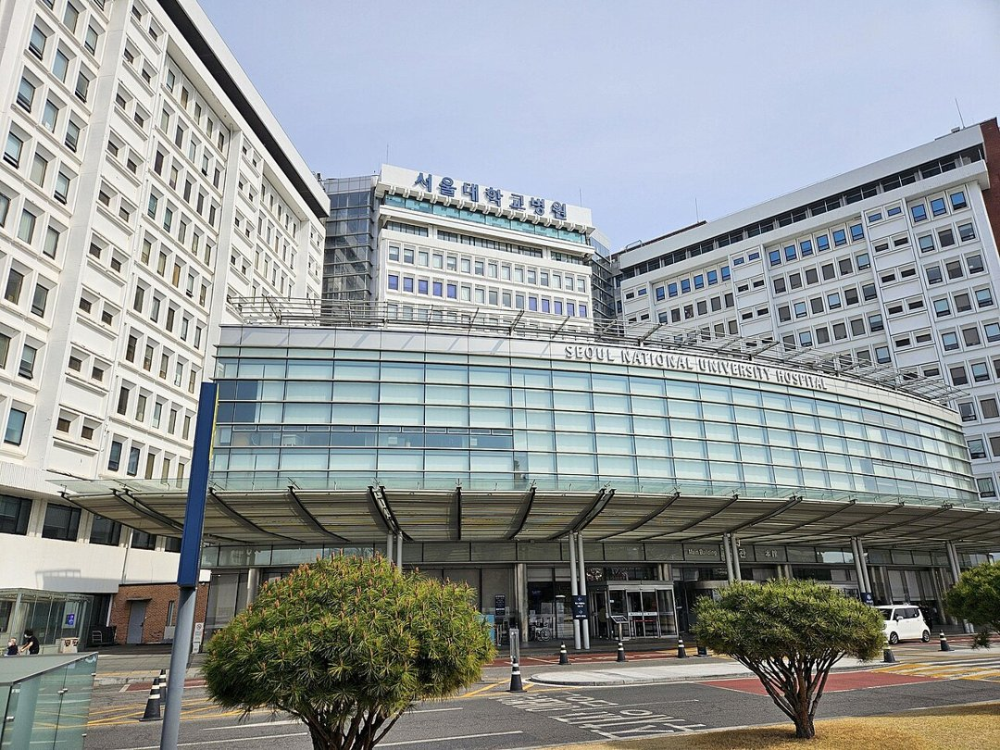

📷 사진 1 자리

▲ 서울대학교병원(2026년 자료사진) · 사진: Kimhs5400 / CC BY 4.0 / 위키미디어 공용
12월 1일 진료분부터 희귀·중증난치질환 산정특례 환자는 급여 진료비의 10%가 아닌 7%만 내요. 보건복지부는 1인당 연평균 부담이 약 75만 원에서 53만 원으로 약 22만 원 줄어든다고 봤어요. 이미 등록한 환자는 신청 없이 자동 적용돼요.
아직 등록하지 않았다면 이야기가 달라요. 확진 뒤 30일을 넘기면 신청한 날부터만 혜택을 받아요.
3줄 요약
내 병원비는 얼마나 줄까
계산은 간단해요. 급여 진료비에 10% 대신 7%를 곱하면 돼요. 지금 내는 돈의 30%가 줄어드는 구조예요.
| 급여 진료비 | 11월까지(10%) | 12월부터(7%) |
|---|---|---|
| 50만 원 | 5만 원 | 3만 5천 원 |
| 100만 원 | 10만 원 | 7만 원 |
| 300만 원 | 30만 원 | 21만 원 |
| 1,000만 원 | 100만 원 | 70만 원 |
진료비 영수증에서 '급여' 칸의 금액에만 해당해요. 비급여 검사나 상급병실 차액이 많은 달에는 전체 금액이 30% 줄지는 않아요. 입원 중 식대도 지금처럼 절반을 내요.
누가 해당하고 누가 아닌가
| 구분 | 12월 1일부터 |
|---|---|
| 희귀·중증난치질환(등록) | 10% → 7% |
| 암·중증화상(등록) | 5% 그대로 |
| 등록하지 않은 환자 | 입원 20%, 외래 30~60% |
적용되는 건 등록한 그 질환으로 진료받을 때예요. 다른 병으로 병원에 가면 일반 부담률을 내요. 국민건강보험공단 안내를 보면 산정특례는 외래와 입원, 약국 조제까지 포함해요.
📷 사진 2 자리
▲ 약국 조제 약도 산정특례 적용 범위예요(자료사진) · 사진: Shixart1985 / CC BY 2.0 / 위키미디어 공용
정부가 부담률을 낮춘 건 암이나 심뇌혈관질환(5%)보다 희귀·중증난치질환의 부담이 두 배 높았기 때문이에요. 2028년 상반기에는 5%까지 더 낮춰 같은 수준으로 맞출 계획이에요.
아직 등록하지 않았다면
1. 진료받는 병원에서 '건강보험 산정특례 등록 신청서'를 받아요. 의사가 확진 내용을 적어 줘요.
2. 병원에 대행을 부탁하거나 공단 지사에 내요.
3. 공단 누리집의 '산정특례 등록내역'에서 등록됐는지 확인해요.
날짜가 중요해요. 확진일부터 30일 안에 신청하면 확진일로 거슬러 적용돼요. 토요일과 공휴일도 30일에 들어가요. 하루라도 넘기면 신청한 날부터 적용돼서 그사이 진료비는 일반 부담률로 남아요.
올해 1월부터 선천성 기능성 단장증후군 등 70개가 추가돼 대상 희귀질환은 1,387개가 됐어요. 중증난치질환은 208개예요. 예전에 안 된다고 들었던 병이라면 다시 확인할 만해요.
이미 등록했다면 5년 기한부터
희귀·중증난치질환의 특례 기간은 5년이에요. 자동으로 이어지지 않아서 재등록해야 해요. 종료 예정일 3개월 전부터 신청할 수 있고 검사 기록은 신청일 기준 1년 이내 것을 봐요. 유전자 검사는 이 기준에서 빠져요.
샤르코-마리투스병 등 9개 질환은 올해 1월부터 재등록할 때 별도 검사를 받지 않아도 돼요. 정부는 이 방식을 다른 질환으로 넓힐 계획이에요.
소득이 낮다면 희귀질환자 의료비 지원사업도 함께 알아보세요. 이 사업도 산정특례 등록이 먼저예요.
자주 묻는 질문
Q. 7%를 받으려면 따로 신청해야 하나요?
이미 산정특례에 등록했다면 신청하지 않아도 돼요. 진료비를 낼 때 자동으로 계산돼요.
Q. 11월에 받은 진료비도 돌려받나요?
아니에요. 12월 1일 진료분부터예요. 11월 말부터 12월까지 이어진 입원은 병원 원무과에 계산 방법을 물어보세요.
Q. 중증치매도 7%인가요?
공단 안내에서 중증치매는 희귀·중증난치질환과 다른 항목이에요. 이번 보도자료에는 중증치매가 따로 나오지 않아 공단(1577-1000)에 확인하는 게 정확해요.
이번 변화의 혜택은 부담률보다 등록 날짜에서 먼저 갈려요. 등록하지 않은 사람은 10%에서 7%가 아니라 20~60%에서 시작하기 때문이에요. 새로 진단받은 가족이 있다면 7% 소식보다 30일 마감부터 알려 주는 게 도움이 돼요.
12월 첫 진료 뒤에는 영수증의 급여 본인부담금이 7%로 계산됐는지 한 번 확인하세요. 다르면 병원 원무과나 공단에 문의하면 돼요.
끝까지 읽어 주셔서 감사해요. 공감(좋아요) ♥ 꾹, 이웃 추가도 부탁드려요!
#산정특례 #산정특례본인부담률 #희귀질환 #중증난치질환 #본인부담률7퍼센트 #건강보험 #산정특례신청 #산정특례재등록 #병원비 #12월달라지는것